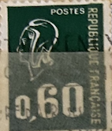
| SOURCE | TITLE| IMAGE MATCH | click to source page |
| eBay | France #YT1891j MNH 1977 Marianne de Béquet 1-PH [Dark Green][1494] | eBay | 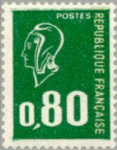 |
| eBay | Republique Francaise | eBay | 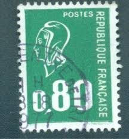 |
| eBay | Variety Without Phosphorus - Marianne Of Becquet N°1891b Mint ** MNH | eBay | 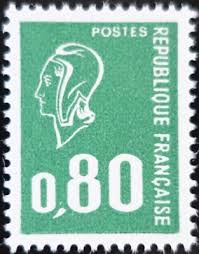 |
| eBay | FRANCE 1292A - Marianne "1974 Green - Typography" (pb97175) | eBay | 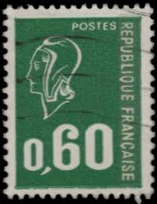 |
| eBay | 1815 for sale | eBay | 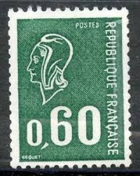 |
| eBay | France 1976 - Y & T n. 1891 b. - Type Marianne de Béquet | eBay | 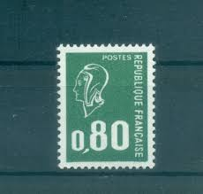 |
| sellosmundo.com | Stamp: Verde 0,80 of France Europe* | 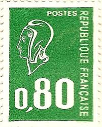 |
| Flickr | french stamp France Postes 0,80 Marianne allegory green Fr… | Flickr | 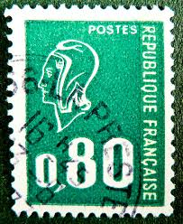 |
| eBay | France 1976, Stamp Roulette 1894, Marianne de Bequet, New**, MNH | eBay | 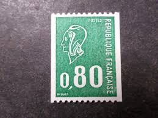 |
| Bob Shop | France & Colonies - 1974 FRANCE MARIANNE for sale in Cape Town (ID:671367852) | 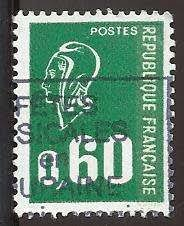 |
| Amazon.ca | France 1888x,A1888x,1889x (Complete.Issue.) Normal Paper unmounted Mint/Never hinged ** MNH 1974 Small Marianne (Stamps for Collectors), Collectible Postage Stamps - Amazon Canada | 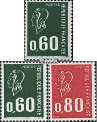 |
| Alamy | FRANCE - CIRCA 1974: a stamp printed in the France shows Air, Sculpture by Aristide Maillol, circa 1973 Stock Photo - Alamy | 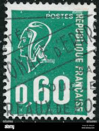 |
| Dreamstime.com | 282 Marianne Stamp Stock Photos - Free & Royalty-Free Stock Photos from Dreamstime | 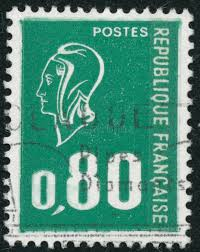 |
| Dreamstime.com | Marianne (Béquet), Serie, Circa 1974 Editorial Stock Photo - Image of postal, women: 141769303 | 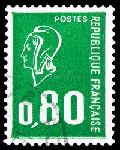 |
| Dreamstime.com | Marianne Type Bequet in Green Stamp Editorial Stock Photo - Image of stamp, france: 189469443 | 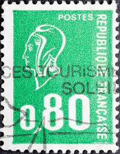 |
| BidCurios | Stamp :- France 0,60 – Marianne de Bequet Definitive (Green) Used - BidCurios | 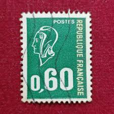 |
| Alamy | TIMBRE OBLITÉRÉ MARIANNE VERTE. POSTES. RÉPUBLIQUE FRANÇAISE. 0,60 Stock Photo - Alamy | 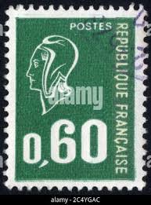 |
| Shutterstock | Timbre Francais: Over 14,275 Royalty-Free Licensable Stock Photos | Shutterstock | 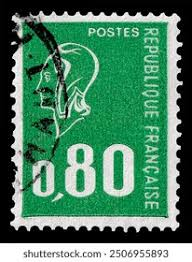 |
| Todocolección | lote de 8 etiquetas de francia mon timbre en li - Buy Antique stamps of France on todocoleccion | 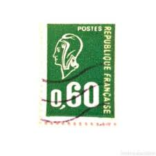 |
| Todocolección | f-ex.2102 francia francia hospital depot conval - Buy Antique stamps of France on todocoleccion | 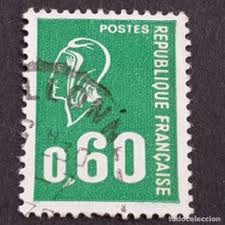 |
| Shutterstock | 1+ Thousand Marianne French Royalty-Free Images, Stock Photos & Pictures | Shutterstock | 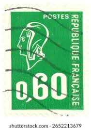 |
| kinantropologie.cz | Timbres Poste France Neufs Timbre France Yvert No 1590-1595 Série Personnages Célébres Timbres Poste France Carnet | 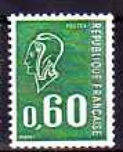 |
| Dreamstime.com | Vintage France Postage Stamps Editorial Photography - Image of france, background: 24151972 | 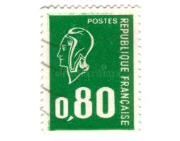 |
| Dreamstime.com | Bequet Stock Photos - Free & Royalty-Free Stock Photos from Dreamstime | 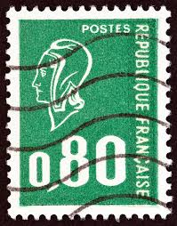 |
| massimomontone.com | Timbre Collection Sans Charnière Timbre Marianne De Bequet N° 1815b Neuf Sans Charnière ** - France, Roulette, émis 1971-1975 Timbres France Marianne | 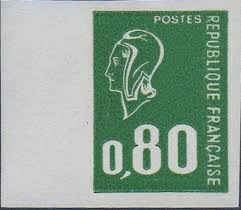 |
| BalkanAuction | Postage stamps | Philately | Collectibles | BalkanAuction | 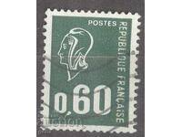 |
| Free | Variétés d'impression | 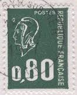 |
| eBay UK | France 1983A y-1985A y (complete issue) unmounted mint / never hinged 1976 small | eBay UK | 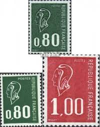 |
| Colnect | Stamp: Marianne type Bequet (France(Marianne (Béquet)) Yt:FR 1816a,Mi:FR 1889x,Sg:FR 1905b,AFA:FR 1925,Un:FR 1816b 📮 | 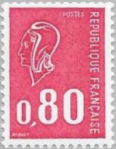 |
| Shutterstock | September 24 2025 Jakarta Indonesia Postage Stock Photo 2687136607 | Shutterstock | 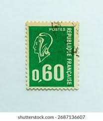 |
| Colnect | Stamp: Marianne type Béquet (France(Marianne (Béquet)) Yt:FR 1663,Mi:FR 1738,Sn:FR 1292,Sg:FR 1904,AFA:FR 1771,Un:FR 1663 📮 | 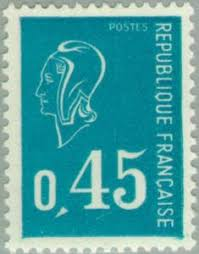 |
| HipStamp | France 1971 Sc#1293c, SG#1905 50c Red Marianne by Bequet USED. | Europe - France & Colonies, General Issue Stamp / HipStamp | 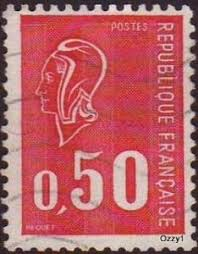 |
| Alamy | TIMBRE OBLITÉRÉ MARIANNE VERTE. POSTES. RÉPUBLIQUE FRANÇAISE. 0,30 Stock Photo - Alamy | 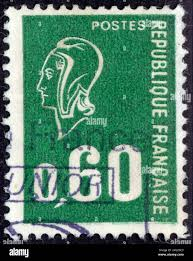 |
| eBay | France 0,80 Francs Stamp - #S41339NQ | eBay | 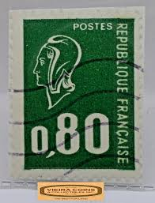 |
| Dreamstime.com | 432 Republique Francaise Stock Photos - Free & Royalty-Free Stock Photos from Dreamstime | 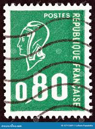 |
| Osta | Prantsusmaa 1974; standard, fosf.paber; 1 mark; puhas ** (247743380) - Osta.ee | 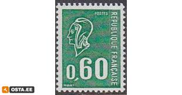 |
| Arpin Philately | Buy France #1495-6 - Marianne (1976) | Arpin Philately | 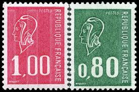 |
| Shutterstock | France-circa 1976a Stamp Printed France Shows Stock Photo 2680810171 | Shutterstock | 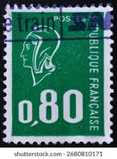 |
| Colnect | Stamp: Marianne type Béquet (3 strips phosphorus) (France(Marianne (Béquet)) Yt:FR 1664c,Mi:FR 1735y,Sg:FR 1905p,AFA:FR 1772F,Un:FR 1664b 📮 | 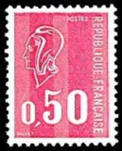 |
| eBay | Francia 1815b Bequet Numero Rossa Ruota 1974 | eBay | 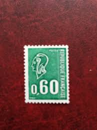 |
| eBay | FRANCASE FRANCE STAMP MNH [SALE] [Choose 10pc of MINT is $3.5] unused WM8237 | eBay | 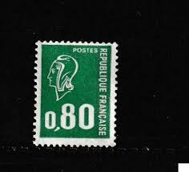 |
| eBay | 1977 FRANCE FRANKREICH DEFINITIVES COIL STAMP YVERT 1894 VF MNH K1 | eBay | 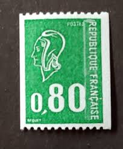 |
| French Philately | 1974 Yt 1814-1816 Marianne (Bequet) Sc 1292A, 1294, 1294B - French Philately - Stamps of France for Sale | 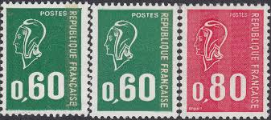 |
| Todocolección | 269 top class 2025 panini kylian mbappé france - Buy Collectible football stickers on todocoleccion | 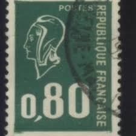 |
| eBay | FRANCE FRANKREICH DEFINITIVE YVERT 1815 VF MNH K1 | eBay | 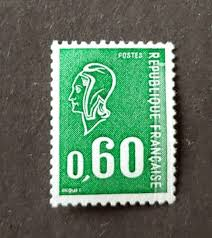 |
| Dreamstime.com | French stamp with Marianne editorial image. Image of franc - 210312235 | 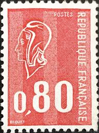 |
| archives-wikitimbres.fr | Birth of the stamp - [Etude monographique du 0,50F Marianne de Béquet] | 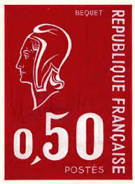 |
| eBay | FRANCE FRANKREICH DEFINITIVE YVERT 1814 VF MNH K1 | eBay | 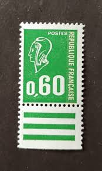 |
| spipfactory.fr | Varieties - [Etude monographique du 0,50F Marianne de Béquet] | 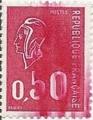 |
| HipStamp | Products from 'ozzy1' in Europe > France & Colonies / HipStamp | |
| eBay | France 1976 80c Marianne by Bequet Perf 14 x 13 Sc 1494 MNH | eBay | |
| Alamy | Marianne french republic hi-res stock photography and images - Alamy | |
| eBay | FRANCASE FRANCE STAMP MNH [SALE] [Choose 10pc of MINT is $3.5] unused WM8439 | eBay | |
| Bridgeman Images | Image of French postage stamps celebrating the figure of the representative heroine | |
| eBay | FRANCE 1292 - Marianne "1971 Sky Blue" (pb97173) | eBay | |
| eBay | STAMP / TIMBRE FRANCE NEUF N° 755 ** ARMOIRIES CORSE | eBay | |
| HipStamp | France, Scott #1292A, used (o), 1974, Marianne by Bequet, 60cts, green | Europe - France & Colonies, General Issue Stamp / HipStamp | |
| eBay | Timbre France Poste N°1663 | eBay | |
| Bob Shop | France & Colonies - Togo - 1976 - MNH was listed for 0.00 on 25 Jun at 21:03 by PostagePaid in Cape Town (ID:646388203) |